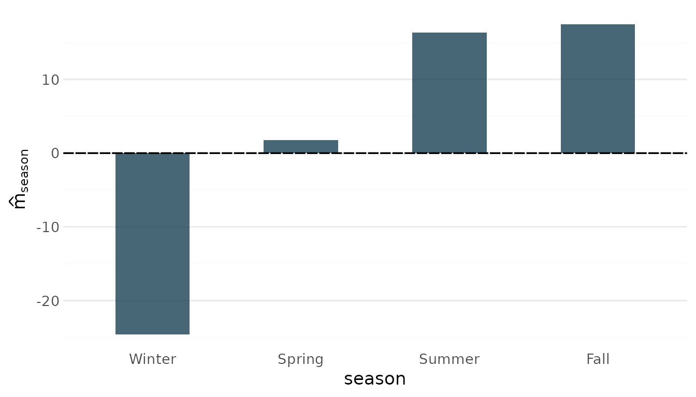
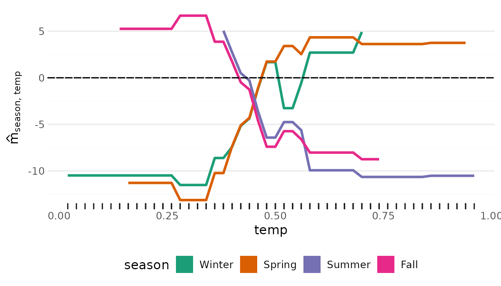
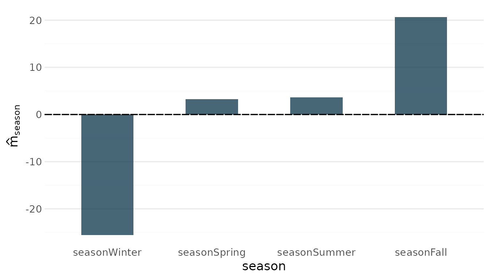
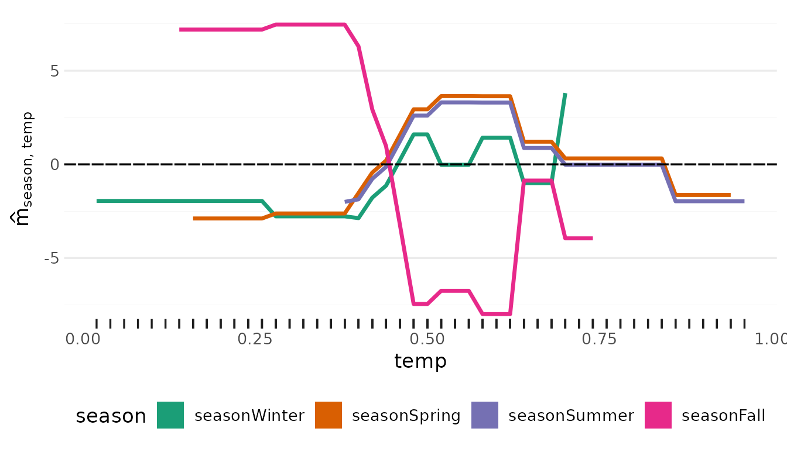
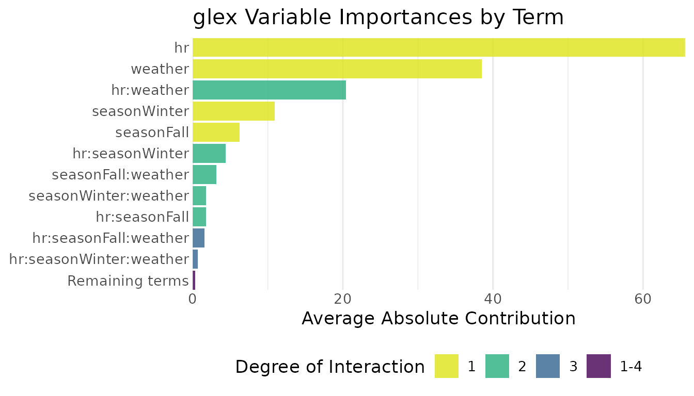

Categorical features: native factors, one-hot groups and semantic groups
Source:vignettes/feature-grouping.Rmd
feature-grouping.RmdA categorical predictor can reach xgboost in two ways,
and glex handles both:
-
Native factors (
xgboost >= 3.0): fit on adata.framewith factor columns. The trees split on sets of levels, and the decomposition treats the factor as one feature from the start. -
Dummy encoding via
model.matrix(): the classic route, and the only one for models fit before native support. The decomposition then sees one feature per level, andgroup_components()re-assembles the factor afterwards.
group_components() also serves a third purpose: treating
any set of features as one, e.g. a block of related measurements.
The built-in bike data has a four-level
season factor alongside numeric predictors:
data(bike, package = "glex")
x_df <- as.data.frame(bike[, c("season", "hr", "temp", "hum")])
str(x_df)
#> 'data.frame': 8645 obs. of 4 variables:
#> $ season: Factor w/ 4 levels "Winter","Spring",..: 1 1 1 1 1 1 1 1 1 1 ...
#> $ hr : num 0 1 2 3 4 5 6 7 8 9 ...
#> $ temp : num 0.24 0.22 0.22 0.24 0.24 0.24 0.22 0.2 0.24 0.32 ...
#> $ hum : num 0.81 0.8 0.8 0.75 0.75 0.75 0.8 0.86 0.75 0.76 ...Native factors
With a data.frame input, xgboost() treats
factor columns as categorical. Pass the same data.frame to
glex(); the factor levels must match the training data in
order, as for predict().
xg_native <- xgboost(
x_df,
bike$bikers,
nrounds = 50,
max_depth = 3,
learning_rate = 0.1,
nthreads = 2
)
res_native <- glex(xg_native, x_df)
names(res_native$m)
#> [1] "season" "hr:season" "hr:season:temp"
#> [4] "season:temp" "hr" "hr:temp"
#> [7] "temp" "hr:hum:season:temp" "hr:hum:season"
#> [10] "hum:season:temp" "hum:season" "hr:hum:temp"
#> [13] "hr:hum" "hum:temp" "hum"season is one feature: there is a single main effect and
single interactions with the numeric predictors. The factor column is
kept in $x, so plots treat it as categorical:
plot_main_effect(res_native, "season")
plot_twoway_effects(res_native, c("season", "temp"))
Dummy encoding fragments the decomposition
Encoding season with model.matrix() gives
one column per level. The decomposition then treats every dummy column
as a feature of its own: the effect of the factor is smeared across its
dummies and their mutual “interactions”, which are artifacts of
the encoding rather than anything about the data.
x <- cbind(
model.matrix(~ season - 1, bike),
as.matrix(bike[, c("hr", "temp", "hum")])
)
colnames(x)
#> [1] "seasonWinter" "seasonSpring" "seasonSummer" "seasonFall" "hr"
#> [6] "temp" "hum"
xg <- xgb.train(
params = xgb.params(max_depth = 3, learning_rate = 0.1, nthread = 2),
data = xgb.DMatrix(x, label = bike$bikers, nthread = 2),
nrounds = 50
)
res <- glex(xg, x)
ncol(res$m)
#> [1] 47Among these terms are things like
seasonFall:seasonWinter, an “interaction” between two
levels of the same factor:
head(sort(colMeans(abs(as.matrix(res$m))), decreasing = TRUE), 10)
#> hr temp hr:temp hum seasonWinter
#> 65.597247 35.139222 16.901747 14.016117 10.907372
#> hr:hum seasonFall hr:seasonWinter hum:temp seasonFall:temp
#> 8.785011 6.212056 4.371334 3.667917 2.827076Re-assembling the factor with group_components()
group_components() aggregates all terms feature-wise:
terms involving only season dummies become the
season main effect, terms mixing a dummy with
hr become the season:hr interaction, and so
on. Because the decomposition is additive, this is exact.
dummy_groups() builds the required groups
list from the un-encoded data, matching the
model.matrix() naming convention by default.
bike carries further factors (mnth,
workingday, weathersit) that we did not encode
into x; dummy_groups() reports them and moves
on:
dummy_groups(res, bike)
#> No encoded columns found for: mnth, workingday, weathersit. If these were encoded, pass a `naming` function matching the column names in `object$x`.
#> $season
#> [1] "seasonWinter" "seasonSpring" "seasonSummer" "seasonFall"
grouped <- group_components(res, dummy_groups(res, bike))
#> No encoded columns found for: mnth, workingday, weathersit. If these were encoded, pass a `naming` function matching the column names in `object$x`.
names(grouped$m)
#> [1] "season" "hr:season" "hr:season:temp"
#> [4] "season:temp" "hr" "hr:temp"
#> [7] "temp" "hr:hum:season:temp" "hr:hum:season"
#> [10] "hum:season:temp" "hum:season" "hr:hum:temp"
#> [13] "hr:hum" "hum:temp" "hum"The components still sum to the model prediction, and the SHAP value
of season is the sum of its dummies’ SHAP values, so the
efficiency property is preserved:
all.equal(rowSums(grouped$m), rowSums(res$m))
#> [1] TRUE
all.equal(
grouped$shap$season,
rowSums(as.matrix(res$shap[, startsWith(names(res$shap), "season"), with = FALSE]))
)
#> [1] TRUESince the grouped columns of x form a one-hot encoding,
group_components() reconstructs the factor, and the plot
functions work as for the native model:
plot_main_effect(grouped, "season")
plot_twoway_effects(grouped, c("season", "temp"))
Both routes end with season as one feature, but they
explain different models: native categorical splits partition the levels
freely, while a dummy split isolates one level at a time. Grouping is an
exact regrouping of the dummy model’s decomposition, not an
approximation of the native one.
Other encoding schemes
If the dummy columns are not named in model.matrix()
style, pass a naming function of
(feature, levels) that reproduces the column names the
model was trained with:
dummy_groups(
res,
bike,
naming = function(feature, levels) paste(feature, levels, sep = "_")
)dummy_groups() only returns columns that actually exist
in object$x, so a dropped reference level (treatment coding
via ~ season) is skipped automatically; the reconstructed
factor then shows a "(base)" level for observations of the
reference category.
Semantic groups
Grouping is not limited to dummy encodings. Any set of features can be treated as one, for example a “weather” block, which in higher-dimensional settings might be a group of anthropometrics, demographics or biomarkers:
weather <- group_components(res, groups = list(weather = c("temp", "hum")))
head(sort(colMeans(abs(as.matrix(weather$m))), decreasing = TRUE), 10)
#> hr weather hr:weather
#> 65.597247 38.517036 20.414133
#> seasonWinter seasonFall hr:seasonWinter
#> 10.907372 6.212056 4.371334
#> seasonFall:weather seasonWinter:weather hr:seasonFall
#> 3.144545 1.799806 1.747389
#> hr:seasonFall:weather
#> 1.536791For such groups no single x value exists, so
weather$x$weather is NA and the effect plots
are not available for that group, but term importances and SHAP values
aggregate as usual:
